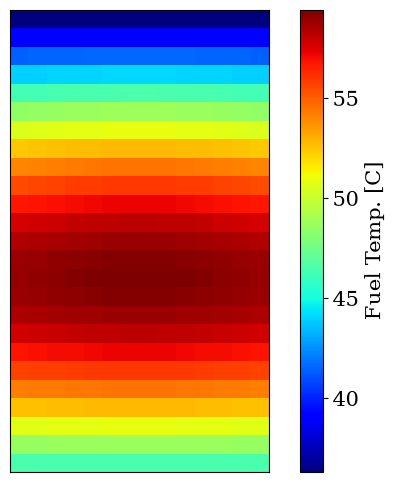

Plates and Channels, an MTR Love Story
In the following example, we will construct a channel and a fuel plate based on IRR-1 (MAMAG) reactor specifications.
[1]:
import matplotlib.pyplot as plt
import numpy as np
from matplotlib import rc
rc("font", family="serif", size=15)
rc("savefig", dpi=600)
rc("figure", figsize=(8, 6))
rc("mathtext", fontset="dejavuserif")
rc("lines", linewidth=3)
from functools import partial
from stream.calculations import ChannelAndContacts, Fuel
from stream.calculations.heat_diffusion import Solid
from stream.composition import symmetric_plate_steady_state
from stream.composition.mtr_geometry import symmetric_plate, x_boundaries
from stream.physical_models.heat_transfer_coefficient import (
regime_dependent_q_scb,
spl_htc,
wall_heat_transfer_coeff,
)
from stream.physical_models.pressure_drop import (
friction_factor,
pressure_diff,
rectangular_laminar_correction,
)
from stream.pipe_geometry import EffectivePipe
from stream.substances import light_water
from stream.units import cm, mm
from stream.utilities import cosine_shape
Specifying the fuel plate’s geometry and properties
We need to specify the discretization, dimensions and properties of the plate - both fuel and cladding:
[2]:
z_N, fuel_N, clad_N = 25, 8, 3
meat_height = 60.4 * cm
meat_width = 63 * mm
meat_depth = 0.51 * mm
clad_depth = 0.38 * mm
clad = Solid(density=2700, specific_heat=900, conductivity=250) # numbers are approximate
fuel = Solid(density=3500, specific_heat=750, conductivity=100) # numbers are approximate
Creating a model of the fuel plate
We set the power distribution along the plate to be cosine-shaped in the xz plane, and fixed throughout the depth of the plate and its width (along the x-axis and y-axis):
[3]:
shape = np.array((z_N, fuel_N + 2 * clad_N))
meat = np.zeros(shape, dtype=bool)
meat[:, clad_N:-clad_N] = True
materials = np.empty(shape, dtype=object)
materials[meat] = fuel
materials[~meat] = clad
material = Solid.from_array(materials)
power_shape_in_rod = cosine_shape(np.linspace(0, meat_height, z_N + 1))
dx_meat = np.diff(x_boundaries(clad_N, fuel_N, clad_depth, meat_depth))[clad_N:-clad_N]
area_fraction = dx_meat / meat_depth
plate_power_shape = np.outer(power_shape_in_rod, area_fraction)
Defining the fuel plate using the defined values and inputs
[4]:
F = Fuel(
z_boundaries=np.linspace(0, meat_height, z_N + 1),
x_boundaries=x_boundaries(clad_N=clad_N, fuel_N=fuel_N, clad_w=clad_depth, meat_w=meat_depth),
material=material,
y_length=meat_width,
meat_indices=meat,
power_shape=plate_power_shape,
name="Fuel",
)
Creating a model of the channel
we enter inputs defining the dimensions of the channel (between two already-defined plates, coupled with periodic boundary conditions), and properties of the flow in the channel:
[5]:
channel_width = 66.6 * mm
channel_depth = 2.1 * mm
re_bounds = laminar_re_max, turbulent_re_min = 2500, 4000
a_dp = channel_depth / channel_width
k_R = rectangular_laminar_correction(a_dp)
comp_friction = friction_factor("regime_dependent", re_bounds=re_bounds, k_R=k_R)
pressure_diff_func = partial(pressure_diff, f=comp_friction)
comp_h_spl = spl_htc("regime_dependent", re_bounds=re_bounds, a_dp=a_dp, Lh=meat_height)
comp_scb = partial(regime_dependent_q_scb, re_bounds=re_bounds)
htc = partial(wall_heat_transfer_coeff, h_spl=comp_h_spl, q_scb=comp_scb)
Defining the channel using the defined values and inputs
Notice that for our coupled construction (which we will create in a moment), the z_N discretization of both fuel and channel must be the same.
[6]:
C = ChannelAndContacts(
z_boundaries=np.linspace(0, meat_height, z_N + 1),
fluid=light_water,
pipe=EffectivePipe.rectangular(
length=meat_height,
edge1=channel_depth,
edge2=channel_width,
heated_edge=meat_width,
),
h_wall_func=htc,
pressure_func=pressure_diff_func,
name="Channel",
)
Coupling Fuel and Channel
Assuming symmetry, we will construct the fuel and channel as if they envelope each other simultaneously from both sides:
[7]:
sys = symmetric_plate(C, F)
from stream.analysis.report import report
report(sys.to_aggregator())
Contains 476 Equations, 2 Nodes, 2 Edges.
Calculation |
Type |
Equation No. |
Unset |
Set Externally |
Missing |
|---|---|---|---|---|---|
Fuel |
Fuel |
0 - 400 |
power, T_top, T_bottom, h_top, h_bottom |
power |
|
Channel |
ChannelAndContacts |
400 - 476 |
Tin, Tin_minus, mdot, p_abs, mdot2 |
Tin, mdot, p_abs |
The missing parameters must be provided, as shown below.
Let us define some approximate parameters of IRR-1:
[8]:
total_power = 5e6
FA_flow = 17.5 # in m3/h, in one fuel assembly
core_rods = 24 # a typical number
plates_per_rod = 23
plates_in_core = plates_per_rod * core_rods
Now, we can run any simulation we want with this coupled system, or compose it into a larger system. Let’s say we only wish to know the steady state of this system given some obvious parameters. Easily enough, there’s already a function for that in STREAM, which employs symmetric_plate internally:
[9]:
state = symmetric_plate_steady_state(
C,
F,
mdot=FA_flow
* (1000 / 3600)
/ plates_per_rod, # Coolant mass flow. A positive value indicates downward flow [KgPerS]
p_abs=1.67e5, # Absolute pressure at the top of the channel [Pascal]
power=total_power / plates_in_core, # Total power generated by the fuel plate, averaged for the entire core [Watt]
Tin=35.0, # Inlet coolant temperature [Celsius]
)
Here we will draw the temperature distribution along the channel (z-axis) of the coolant, the cladding and the fuel:
[10]:
plt.figure()
plt.plot(C.centers, state[C.name]["T_cool"], label="Coolant")
plt.plot(C.centers, state[F.name]["T_wall_right"])
plt.plot(C.centers, state[F.name]["T_wall_left"], label="Wall")
plt.plot(
C.centers,
state[F.name]["T"].reshape(F.shape)[:, clad_N + int((fuel_N - 1) / 2)],
label="Fuel Center",
)
plt.xlabel("Distance from top [m]")
plt.ylabel(r"Temperature [$\degree$C]")
plt.legend()
plt.grid()
plt.show()

And here we will draw a color map of the temperature distribution of the fuel along the channel:
[11]:
plt.figure(figsize=(8, 6))
ax = plt.imshow(state[F.name]["T"].reshape(F.shape), cmap="jet")
plt.colorbar(ax, label="Fuel Temp. [C]")
plt.xticks([])
plt.yticks([])
plt.show()
